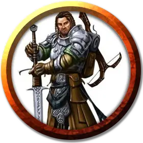

Тёрл Мерросска
Thurl Merosska
Средний Гуманоид (Человек), законно-злой, именной НИП

Класс Доспеха 16 (кираса)
Хиты 70 (11к8 + 21)
Скорость 30 футов
| мод | спас | ||
|---|---|---|---|
| СИЛ | 16 | +3 | +3 |
| ЛОВ | 14 | +2 | +2 |
| ТЕЛ | 14 | +2 | +2 |
| мод | спас | ||
|---|---|---|---|
| ИНТ | 11 | +0 | +0 |
| МДР | 10 | +0 | +0 |
| ХАР | 15 | +2 | +2 |
Навыки Атлетика +5, Обман +4, Убеждение +4, Уход за животными +2
Чувства пассивное Восприятие 10
Языки Общий, Ауран
Опасность 3 (700 опыта)
Бонус мастерства +2
Особенности
Использование заклинаний. Тёрл является заклинателем 5-го уровня. Его базовой характеристикой является Харизма (Сл спасброска от заклинаний 12, +4 к атакам заклинаниями). Тёрл знает следующие заклинания чародея:
• Заговоры (неограниченно):дружба[friends], шквал [gust], свет [light], сообщение [message], луч холода [ray of frost]
• 1 уровень (4 ячейки):поспешное отступление[expeditious retreat], падение пёрышком [feather fall], прыжок [jump]
• 2 уровень (3 ячейки):левитация [levitate], туманный шаг [misty step]
• 3 уровень (3 ячейки):ускорение[haste]
Действия
Мультиатака. Тёрл совершает две рукопашные атаки.
Двуручный меч. Рукопашная атака оружием: +5 к попаданию, досягаемость 5 футов, одна цель. Попадание: рубящий урон 10 (2к6 + 3).
Длинное копьё. Рукопашная атака оружием: +5 к попаданию, досягаемость 10 футов, одна цель. Попадание: колющий урон 9 (1к12 + 3).
Реакции
Парирование. Тёрл добавляет 2 к своему КД против одной рукопашной атаки, которая должна была попасть по нему. Чтобы использовать парирование, Тёрл должен видеть атакующего и держать в руках рукопашное оружие.
Описание
Тёрл Меросска занимает пост предводителя рыцарей Бури Перьев. Раньше Тёрл служил всадником на грифоне в Глубоководье, но ушёл в отставку после того, как чуть не погиб во время грозы. Пережитый опыт терзал его, и когда Тёрл узнал о Ян-Си-Бине, то в обмен на могущество поклялся элементальному принцу в верности.Решив, что среди богатых граждан Глубоководья найдутся и другие достойные слуги Ян-Си-Бина, Тёрл основал общество Бури Перьев, с помощью которого привлекал подходящих кандидатов в ряды культа воздуха и знакомил своих рыцарей с его доктринами.
Когда Аериси Калинос стала пророком воздуха, Тёрл неохотно привлёк своих соратников к общему делу. Хотя он и недоволен тем, что Аериси занимает главенствующее положение в культе, он подчиняется ей в надежде использовать ресурсы культа и её саму для укрепления общества Бури Перьев. С Аериси и её последователями на своей стороне общество будет править Глубоководьем так, как должно.